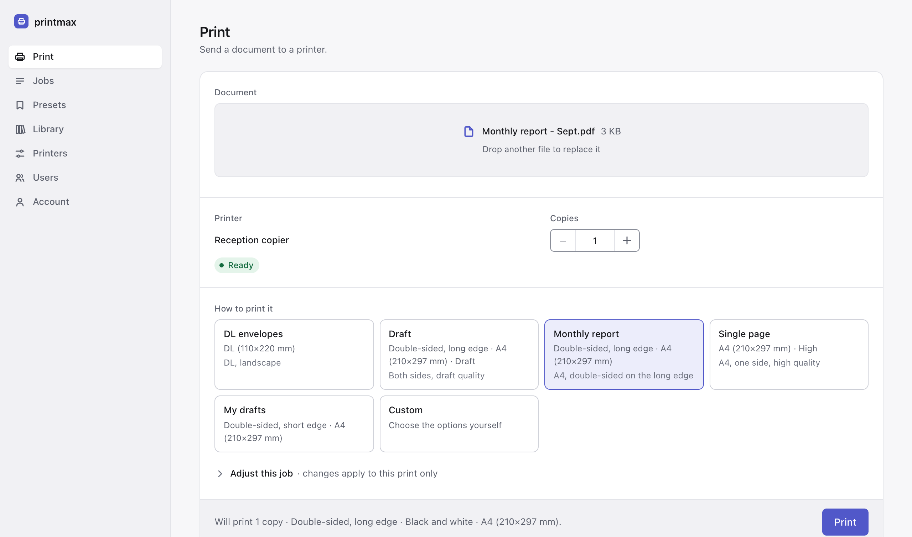
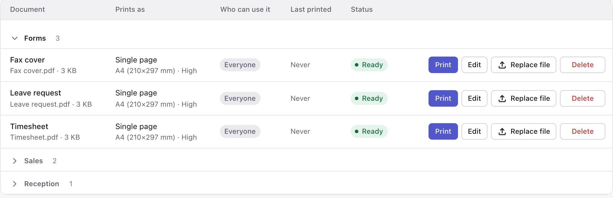
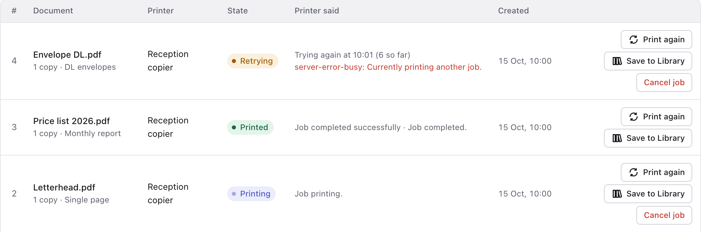
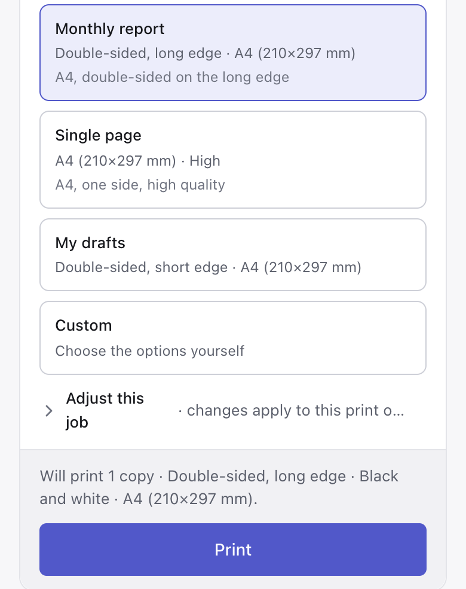

Upload,
pick a preset,
print.
A shared print page for your office. Upload a file, pick a preset and print from any computer or phone on the network, with no printer drivers to install.

Keep the documents you print every week
Save a document once, together with how it prints. After that, anyone in the office can print the timesheet, the price list or the fax cover with one click and a copies count.
- File documents into groups like Forms, Sales and Reception, and search across them
- Share a document with everyone, or keep it to yourself
- Change a preset and every document that uses it follows

Print it again, exactly as before
Every job is kept in the history with the settings it printed with. Print again sends it straight back to the printer, and you can change the copies on the way: print one to check, then the full run.
- Save to Library keeps a one-off job for good
- Files stay for a week by default, so last week's handout is still there
- If the printer is busy or off, the job waits and tries again instead of failing

Pick a preset and know what will come out
An admin sets up presets like Monthly report: A4, double-sided, black and white. Everyone else just picks one, and before they press Print a line spells out exactly what they will get.
- Only the options your printer actually has, read from the printer itself
- Shared presets for the office, personal ones for you
- Works the same from a phone

Also included
- Checked before it prints
- Ask the printer whether it would accept a preset, without printing a page.
- Accounts for everyone
- Admin and user accounts, with each person's own job history.
- Booklets and stapling
- Copiers that only fold, staple or make booklets through their own driver can still do it here.
- Warns when a printer changes
- If a printer drops a tray or an option, the presets that relied on it are flagged.
- Presets you can move
- Export a printer's presets to a file and import them on another server.
- No print server to look after
- It talks to network printers directly, so there is no CUPS to install or keep running.
Install
curl -O https://raw.githubusercontent.com/bevanjkay/printmax/main/docker-compose.yml
docker compose up -dOpen port 8080 and create the admin account with the setup token printed in the container log. Then add a printer by its IPP URI, usually ipp://<host>/ipp/print, or scan the network for one (inside Docker, scanning needs host networking).
Every setting has a default. The README covers the rest: reverse proxies, printer certificates and network discovery.
What you need
A machine that is always on and runs Docker (a small server or NAS is plenty), and a network printer that speaks IPP and accepts PDF. Most office printers and copiers do.